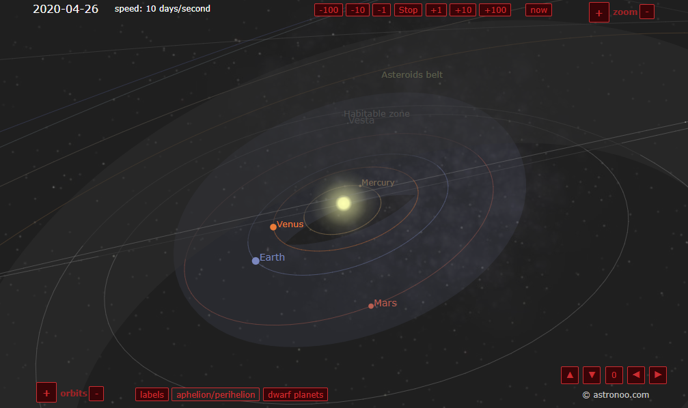
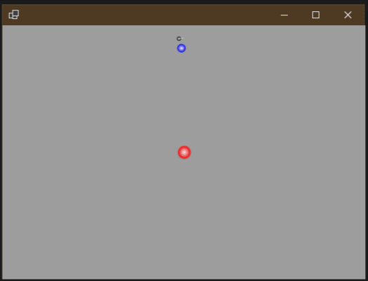
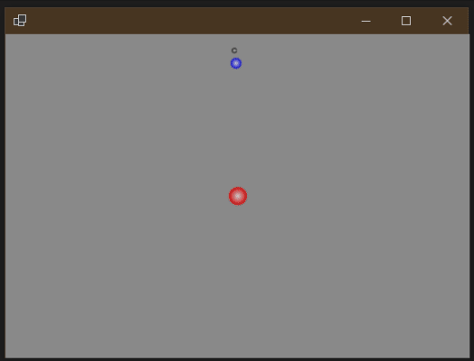
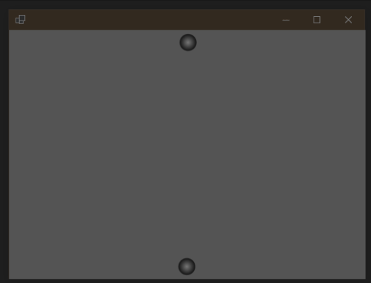
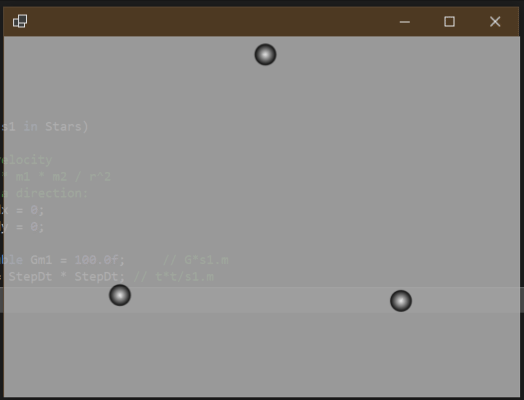
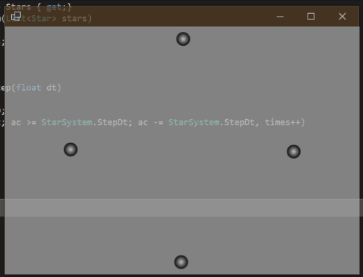

这将是一篇罕见而偏极客的文章。
我上大学时就见过一些模拟太阳系等天体运动的软件和网站，觉得非常酷炫，比如这个（http://www.astronoo.com/en/articles/positions-of-the-planets.html）：

其酷炫之处不仅在于天体运动轨迹能画出美妙的弧线，更重要的是其运动规律完全由万有引力定律产生，不需要对其运动轨迹进行编程。所有天体受其它天体的合力，然后按照其加速度运行。只需一个起始坐标和起始速度，就能坐下来欣赏画面。
我从大学毕业后就一直对这个抱有深厚兴趣，工作第一年时我就用C++做过一版；后来我负责公司前端工作，又用js/canvas又做了一个重制版；由于近期爆发的.NET“革命”，我近期又用C#/.NET再次重制了一版。
由于是程序员看数学知识，此处我将使用代码来表示公式。
F与两个天体的质量m1, m2成正比，如距离r的平方成反比，用代码表示为：F = m1 * m2 * G / r ^ 2；a等于合力F除以质量m，用代码表示为：a = F / m；v与加速度a以及时间t的关系，用代码表示为：v = a * t；s与速度v以及时间t的关系，用代码表示为：s = v * t。这里面的所有知识都已经在高中物理提过了，但有两点需要注意：
x轴和y轴两个分量；t实际上是小段时间dt，程序将循环模拟小段时间累加起来，来模拟天体运动。class Star
{
public LinkedList<Vector2> PositionTrack = new LinkedList<SharpDX.Vector2>();
public double Px, Py, Vx, Vy;
public double Mass;
public float Size => (float)Math.Log(Mass) * 2;
public Color Color = Color.Black;
public void Move(double step)
{
Px += Vx * step;
Py += Vy * step;
PositionTrack.AddFirst(new Vector2((float)Px, (float)Py));
if (PositionTrack.Count > 1000)
{
PositionTrack.RemoveLast();
}
}
}注意，我没指定大小Size，直接给值为其质量的对数乘2，另外注意我使用了一个PositionTrack的链表来存储其运动轨迹。
void Step()
{
foreach (var s1 in Stars)
{
// star velocity
// F = G * m1 * m2 / r^2
// F has a direction:
double Fdx = 0;
double Fdy = 0;
const double Gm1 = 100.0f; // G*s1.m
var ttm = StepDt * StepDt; // t*t/s1.m
foreach (var s2 in Stars)
{
if (s1 == s2) continue;
var rx = s2.Px - s1.Px;
var ry = s2.Py - s1.Py;
var rr = rx * rx + ry * ry;
var r = Math.Sqrt(rr);
var f = Gm1 * s2.Mass / rr;
var fdx = f * rx / r;
var fdy = f * ry / r;
Fdx += fdx;
Fdy += fdy;
}
// Ft = ma -> a = Ft/m
// v = at -> v = Ftt/m
var dvx = Fdx * ttm;
var dvy = Fdy * ttm;
s1.Vx += dvx;
s1.Vy += dvy;
}
foreach (var star in Stars)
{
star.Move(StepDt);
}
}注意其中有个foreach循环，它将一一计算每个天体对某天体的力，然后通过累加的方式求出合力，最后依照合力计算加速度和速度。如果使用gmp等高精度计算库，该循环将存在性能热点，因此可以将这个foreach改成Parallel.For加lock的方式修改合力Fdx和Fdy，可以提高性能（C++的代码就是这样写的）。
public void Draw(DeviceContext ctx)
{
ctx.Clear(Color.DarkGray);
using var solidBrash = new SolidColorBrush(ctx, Color.White);
float allHeight = ctx.Size.Height;
float allWidth = ctx.Size.Width;
float scale = allHeight / 100.0f;
foreach (var star in Stars)
{
using var radialBrush = new RadialGradientBrush(ctx, new RadialGradientBrushProperties
{
Center = Vector2.Zero,
RadiusX = 1.0f,
RadiusY = 1.0f,
}, new SharpDX.Direct2D1.GradientStopCollection(ctx, new[]
{
new GradientStop{ Color = Color.White, Position = 0f},
new GradientStop{ Color = star.Color, Position = 1.0f},
}));
ctx.Transform =
Matrix3x2.Scaling(star.Size) *
Matrix3x2.Translation(((float)star.Px + 50) * scale + (allWidth - allHeight) / 2, ((float)star.Py + 50) * scale);
ctx.FillEllipse(new Ellipse(Vector2.Zero, 1, 1), radialBrush);
ctx.Transform =
Matrix3x2.Translation(allHeight / 2 + (allWidth - allHeight) / 2, allHeight / 2);
foreach (var line in star.PositionTrack.Zip(star.PositionTrack.Skip(1)))
{
ctx.DrawLine(line.First * scale, line.Second * scale, solidBrash, 1.0f);
}
}
ctx.Transform = Matrix3x2.Identity;
}注意我在绘图代码逻辑中做了一些矩阵变换，我把所有逻辑做成了窗体分辨率无关的，假定屏幕长和宽的较小值为100，然后左上角坐标为-50, -50，右下角坐标为50, 50。
这是最容易想到了，地球绕太阳转，月亮绕地球转，创建代码如下：
public static StarSystem CreateSolarEarthMoon()
{
var solar = new Star
{
Px = 0, Py = 0,
Vx = 0.6, Vy = 0,
Mass = 1000,
Color = Color.Red,
};
// Earth
var earth = new Star
{
Px = 0, Py = -41,
Vx = -5, Vy = 0,
Mass = 100,
Color = Color.Blue,
};
// Moon
var moon = new Star
{
Px = 0, Py = -45,
Vx = -10, Vy = 0,
Mass = 10,
};
return new StarSystem(new List<Star> { solar, earth, moon });
}注意所有数据都没使用真实数字模拟（不然地球绕太阳转一圈需要365天才能看完😂），运行效果如下：

从轨迹可以看出，由于太阳引力的作用，地球会转着太阳转，但也同样由于地球和月球引力的作用，太阳也在以微小的角度在“公转”。
如果将太阳质量翻倍(1000->2000)，会是何种效果呢？

可见这样一来，由于引力太大，导致地球速度变快，月亮就被地球“甩”出去了，然后地球轨道也变成了实实在在的椭圆。
宇宙中存在这样一种星系，它的两颗恒星互相围绕对方转，也可以模拟出来：

注意两个天体在接近时速度会变快，远离时速度会变慢，这是由于万有引力与距离平方成反比决定的。
static IEnumerable<Star> CreateStars(int N)
{
for (var i = 0; i < N; ++i)
{
double angle = 1.0f * i / N * Math.PI * 2;
double R = 45;
double M = 10000 * 2 / (N * Math.Sqrt(N) * Math.Log(N));
double v = 5;
double px = R * Math.Sin(angle);
double py = R * -Math.Cos(angle);
double vx = v * Math.Cos(angle);
double vy = v * Math.Sin(angle);
yield return new Star
{
Px = px,
Py = py,
Vx = vx,
Vy = vy,
Mass = M,
};
}
}通过精密的数学计算，可以让任意多的天体组织为系统，如将3当作N传入函数，即可组织为“三星系统”，运行效果如下：

注意，超过2星的系统都不稳定（因此“三星系统”也不稳定），转过两圈之后所有天体由于double类型的误差已经累积到不可逆转的程度，“三星系统”会慢慢崩溃解体。
看看四星系统，命运也差不多（又比“三星”稍稳定，需要等待好几圈才崩溃）：

由于误差是double类型的精度限制而累积的，在C++中我可以使用gmp、mpir、mpfr等高精度计算库来模拟计算，性能也非常高。我之前使用C++和mpir/boost配合，可以让四星系统稳定运行长达15分钟不崩溃，还能在我的Windows Phone(😂)上流畅运行。
之前有人将mpir移植到了.NET，但不支持.NET Core（https://github.com/wezeku/Mpir.NET），有人将mpfr移植到了.NET（https://github.com/emphasis87/mpfr.NET/pull/5），.NET Core可以运行，但有坑爹的bug，我提了PR，但作者似乎没心思Merge😂。
大小数计算在天文、地震、天气、海洋等科研领域有不可取代的作用，我挺希望.NET能提供一个高性能、高精度的小数计算库，如BigFloat。有人会问.NET 4.0不是提供了BigInteger吗？难道不够？是真不够！整数计算和小数计算不完全一样，性能这一关就过不去。但在.NET Core中这个问题官方似乎没有太大动力去做，我在github上找到了几个相关issue，都是open状态：
本文中涉及的所有完整、可运行代码都已经上传到我的github博客，各位可以自行下载：https://github.com/sdcb/blog-data/tree/master/2019/20191214-simulate-planet-movement-using-dotnet
喜欢的朋友 请关注我的微信公众号：【DotNet骚操作】